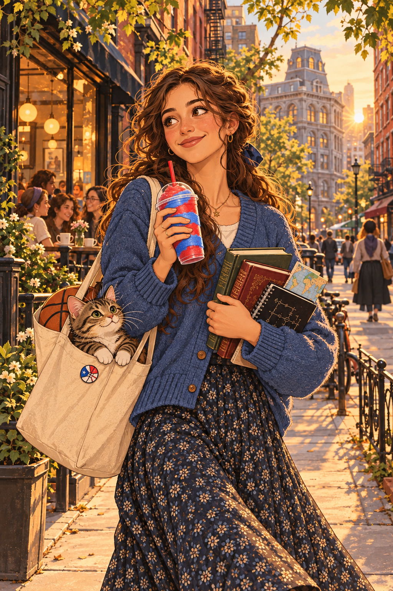
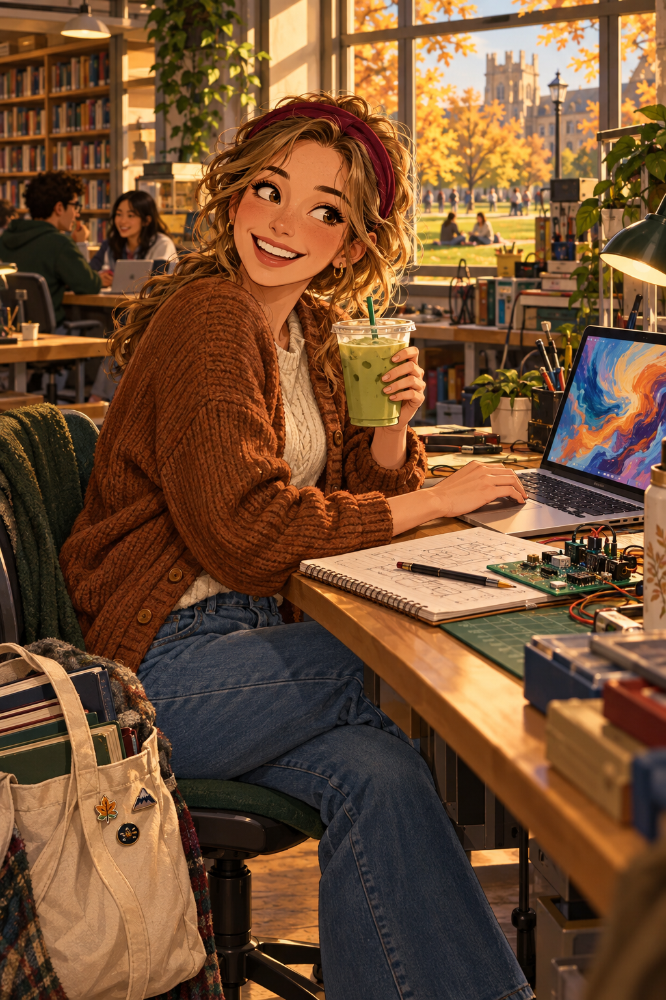

imagined portraits
What does AI think a person looks like when you describe everything except their appearance? My friend and I described each other through personality, interests, routines, and the things we care about. AI turned those descriptions into two imagined cartoon portraits.

my friend, imagined
Her love of literature, engineering, basketball, walks, her cat, and Slurpees became details in a warm New York scene.
me, imagined
My friend's description of mentoring, busy student life, engineering, AI art, matcha, and wanting to be outdoors became a cozy library and lab scene.No reference photos were used. The faces, hair, and other physical features are invented, not accurate likenesses or deductions from our personalities. The images show the model's visual interpretation of our descriptions.